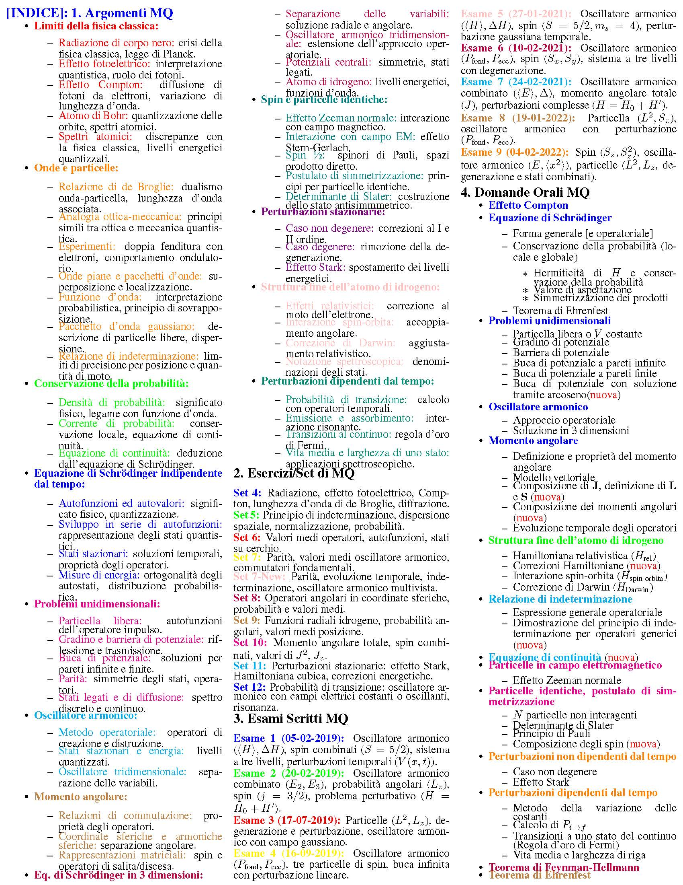

Indice Completo (Formato Immagine)

1. Argomenti MQ
- Limiti della fisica classica:
-
Onde e particelle:
- Relazione di de Broglie
- Analogia ottica-meccanica
- Esperimento della doppia fenditura
- Onde piane e pacchetti d’onde
- Principio di sovrapposizione
- Pacchetto d’onda gaussiano
- Relazione di indeterminazione
- L’equazione di Schrödinger dall’ottica
- Conservazione della probabilità
- Densità e corrente di probabilità
- Equazione di continuità
- Calcolo operatoriale
- Teorema di Ehrenfest
- Equazione di Schrödinger indipendente dal tempo:
- Problemi unidimensionali:
- Operatori e spazi vettoriali:
- Postulati della meccanica quantistica:
- Momento angolare:
- Eq. di Schrödinger in 3 dimensioni:
- Spin:
- Perturbazioni stazionarie:
2. Esercizi/Set di MQ
- Set 4: Radiazione, effetto fotoelettrico, Compton, lunghezza d’onda di de Broglie, diffrazione
- Set 5: Principio di indeterminazione, dispersione spaziale, normalizzazione, probabilità
- Set 6: Valori medi operatori, autofunzioni, stati su cerchio
- Set 7: Parità, valori medi oscillatore armonico, commutatori fondamentali
- Set 7-New: Parità, evoluzione temporale, indeterminazione, oscillatore armonico multivista
- Set 8: Operatori angolari in coordinate sferiche, probabilità e valori medi
- Set 9: Funzioni radiali idrogeno, probabilità angolari, valori medi posizione
- Set 10: Momento angolare totale, spin combinati, valori di \(J^2\), \(J_z\)
- Set 11: Perturbazioni stazionarie: effetto Stark, Hamiltoniana cubica, correzioni energetiche
- Set 12: Probabilità di transizione: oscillatore armonico con campi elettrici costanti o oscillanti, risonanza
3. Esami Scritti MQ
- Esame 1 (05-02-2019): Oscillatore armonico (\(\langle H \rangle, \Delta H\)), spin combinati (\(S = 5/2\)), sistema a tre livelli, perturbazioni temporali (\(V(x,t)\))
- Esame 2 (20-02-2019): Oscillatore armonico combinato (\(E_2, E_3\)), probabilità angolari (\(L_z\)), spin (\(j=3/2\)), problema perturbativo (\(H = H_0 + H'\))
- Esame 3 (17-07-2019): Particelle (\(L^2, L_z\)), degenerazione e perturbazione, oscillatore armonico con campo gaussiano
- Esame 4 (16-09-2019): Oscillatore armonico (\(P_\text{fond}, P_\text{ecc}\)), tre particelle di spin, buca infinita con perturbazione lineare
- Esame 5 (27-01-2021): Oscillatore armonico (\(\langle H \rangle, \Delta H\)), spin (\(S=5/2, m_s=4\)), perturbazione gaussiana temporale
- Esame 6 (10-02-2021): Oscillatore armonico (\(P_\text{fond}, P_\text{ecc}\)), spin (\(S_x, S_y\)), sistema a tre livelli con degenerazione
- Esame 7 (24-02-2021): Oscillatore armonico combinato (\(\langle E \rangle, \Delta\)), momento angolare totale (\(J\)), perturbazioni complesse (\(H = H_0 + H'\))
- Esame 8 (19-01-2022): Particella (\(L^2, S_z\)), oscillatore armonico con perturbazione (\(P_\text{fond}, P_\text{ecc}\))
- Esame 9 (04-02-2022): Spin (\(S_z, S_z^2\)), oscillatore armonico (\(E, \langle x^2 \rangle\)), particelle (\(L^2, L_z\), degenerazione e stati combinati)
4. Domande Orali MQ
- Effetto Compton
- Equazione di Schrödinger:
- Problemi unidimensionali:
- Oscillatore armonico:
- Momento angolare:
- Struttura fine dell’atomo di idrogeno:
- Relazione di indeterminazione:
- Equazione di continuità
- Particelle in campo elettromagnetico:
- Particelle identiche, postulato di simmetrizzazione:
- Perturbazioni non dipendenti dal tempo:
- Perturbazioni dipendenti dal tempo:
- Teorema di Feynman-Hellmann
- Teorema di Ehrenfest